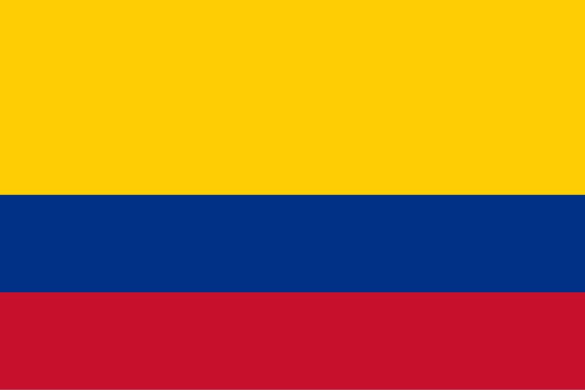

Daniel Forero
About Me
My name is Daniel Forero, I am a student at BYU-Pathway. I am currently working on my degree in Web Development. I have a passion for technology and enjoy learning new skills in the field of web development.
Bogotá, Colombia
The Flag of Colombia The national flag of Colombia features three horizontal stripes of yellow, blue, and red: Yellow: Represents the rich soil, abundant natural resources, minerals, and sunshine of the country. Blue: Symbolizes the oceans that touch Colombia's coasts—the Pacific Ocean and the Caribbean Sea—as well as the rivers and clear skies. Red: Represents the blood shed by heroes who fought for Colombia's independence, as well as the warmth, courage, and determination of its people.
Web Dev Tools
- HTML
- CSS
- JavaScript
- PHP
- MySQL
- WordPress